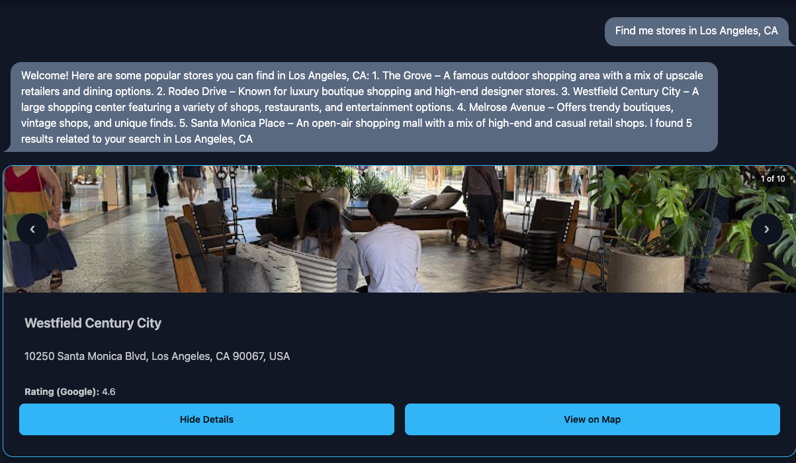

Resources
Poster
Problem Domain Book
[1] H. Daumé III, A Course in Machine Learning. ciml.info, 2017. Accessed: Oct. 27, 2024. [Online]. Available: http://ciml.info
Sources
- [1] H. Blockeel, L. Devos, B. Frénay, G. Nanfack, and S. Nijssen, “Decision trees: from efficient prediction to responsible AI,” Frontiers in artificial intelligence, vol. 6, Jul. 2023, doi: https://doi.org/10.3389/frai.2023.1124553.
- [2] “How to Meet WCAG (Quickref Reference).” Www.w3.org, www.w3.org/WAI/WCAG22/quickref/?versions=2.1.
- [3] “WebAIM: Survey of Users with Motor Disabilities.” Webaim.org, 29 Apr. 2013, webaim.org/projects/motordisabilitysurvey/#means.
Requirements (not all complete)
Functional Requirements
- FR1. [1] The user should be able to create an account
- FR2. [1] The user should be able to log in and out of their account
- FR3. [1] The user should be able to change their password
- FR4. [1] The user should be able to change their email
- FR5. [1] The user should be able to delete the account
- FR6. [1] The user should be able to interact with a chatbot using natural language
- FR7. [1] The user should be able to set basic preferences for travel or relocation
- FR8. [1] If user inputs are unclear, chatbot should ask for clarification
- FR9. [1] The site should recommend major cities at least
- FR11. [1] The site should display basic information for the recommended locations.
- FR12. [1] The admin should be able to delete a user account.
- FR13. [1] The admin should be able to edit user information.
- FR28. [1] The user should be able get general information using the explore page
- FR14. [2] The chatbot should be able to handle more complex queries by parsing user inputs
- FR15. [2] The explore page should provide personalized data based on user’s preferences
- FR17. [2] Users should be able to apply filters/preferences to refine recommendations
- FR18. [2] The site should display detailed information for recommendations.
- FR19. [2] Users should be able to provide feedback for recommendations.
- FR21. [2] The chatbot should provide personalized data based on user’s preferences
- FR29. [2] User should be able to save items such as hotels, houses, and apartments so they can go back to them
- FR10. [3] The chatbot should be able to recommend locations for users
- FR16. [3] The site should adapt responses/preferences based on user history
- FR20. [3] 3D globe shows heat map from information
- FR22. [3] Embarkr shall integrate with travel booking systems.
- FR23. [3] The chatbot will expand to recommend any city, not just large ones.
- FR24. [3] Users should be able to leave detailed reviews on any city.
- FR25. [3] Embarkr should provide cost comparison tools for different cities
- FR26. [3] Embarkr should support speech interaction with the chatbot.
- FR27. [3] Embarkr should notify users about information regarding planned/saved trips
Non-Functional Requirements
- NFR1. [1] Embarkr will utilize a database to store user data and location information.
- NFR2. [1] Embarkr will be compatible on Chromium and Firefox web browsers.
- NFR3. [1] Embarkr will have an intuitive user interface.
- NFR4. [1] Embarkr will be implemented using Python3 with Django for development.
- NFR5. [1] Embarkr will use a decision tree to create accurate data.
- NFR6. [2] Embarkr will minimize system resource usage.
- NFR6. [2] Embarkr will have an aesthetically pleasing user interface.
- NFR7. [2] Embarkr will use internally managed data for responses.
- NFR8. [2] Embarkr will be functional on mobile browsers.
- NFR9. [2] Embarkr will minimize server resource usage.
- NFR10. [3] Embarkr will be accessible over the internet
- NFR11. [3] Em barkr will process credit cards and other online payments methods.
Screenshots

